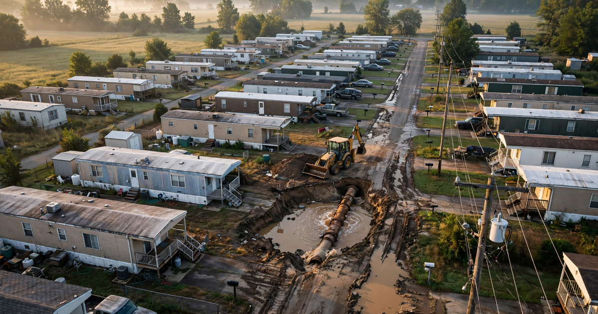

Manufactured Housing Community Infrastructure Assessment and Capital Planning SaaS
A private equity fund closes on a 200-pad manufactured housing community in central Florida for $8.4 million. Cap rate looks gorgeous at 7.2%. Lot rents are $180 below market. The spreadsheet says the fund will double its money in four years by raising rents $30 per quarter and trimming operating expenses. Ninety-three days after closing, a 6-inch cast iron water main installed in 1974 collapses under a private road that services 47 homes. The emergency repair costs $340,000. The county health department arrives and discovers the community's water system has been operating on an expired permit since 2019. A boil-water notice goes up. Three weeks later, a sewer camera inspection reveals root intrusion across 1,600 linear feet of vitrified clay pipe. The fund's "deferred maintenance" line item was $200,000. The actual infrastructure bill will exceed $1.6 million. Nobody checked because there was nothing to check it with.

The Problem
Manufactured housing communities are the largest source of unsubsidized affordable housing in the United States, sheltering approximately 22 million people across roughly 43,000 land-lease communities scattered from the Florida Panhandle to the Pacific Northwest, according to the Census Bureau's American Housing Survey. These communities operate as small private utilities: they own and maintain their own water distribution systems, sewer collection networks, private roads, stormwater infrastructure, and in many cases, electrical distribution from a master meter, which means the community operator is simultaneously landlord, water utility, road department, and sewer authority for every resident who lives behind the entrance sign.
The infrastructure holding these communities together is old in a way that commercial real estate investors, trained to think in terms of roof replacements and HVAC upgrades, rarely comprehend. The manufactured housing boom in America ran from the late 1960s through the early 1980s, when communities were built fast, cheap, and to the minimum standards of whatever county happened to be paying attention, and the materials they used tell the story of a construction era that didn't expect its work to last this long. Water mains are polybutylene, galvanized steel, or cast iron. Sewer lines are vitrified clay, Orangeburg (literally compressed wood fiber impregnated with tar, a material that was already considered inadequate when it was installed), or early-generation PVC with solvent-welded joints that have been separating for decades. Electrical distribution runs through direct-buried aluminum conductors or overhead lines on wooden poles that haven't been load-tested since installation, and the private roads were built without proper subbase, often over compacted fill that has since settled unevenly beneath the weight of fifty years of heavy manufactured home transport vehicles. Average infrastructure age across the sector runs 40 to 55 years, with some systems pushing past 60.
And yet the capital flooding into this sector over the past decade has been staggering, driven by a thesis so simple it fits on a napkin: buy underpriced parks, raise rents to market, and ride the cap rate compression. According to data compiled by Green Street and Marcus & Millichap, institutional investment in manufactured housing communities has exceeded $50 billion since 2015. The publicly traded REITs alone tell the story: Sun Communities (NYSE: SUI) reported a portfolio of approximately 670 communities with 181,000 sites as of its 2025 10-K, while Equity LifeStyle Properties (NYSE: ELS) operates roughly 450 properties, and behind both sits a second tier of private equity firms and family offices that have been aggressively acquiring independent parks under names like Havenpark Communities, RHP Real Estate, and YES! Communities, backed by the balance sheets of Brookfield, Apollo, and Carlyle.
The acquisition thesis is compelling on paper because the arithmetic is relentless. A 200-pad park generating $400/month in lot rent has $960,000 in annual revenue; raise those rents to $600/month over three years and revenue jumps to $1.44 million on the same cost base, which at a 6% cap rate transforms a $16 million asset into a $24 million one without adding a single pad or improving a single road. What doesn't work is the assumption baked into every acquisition model: that the infrastructure holding the community together will continue to function while the new owner extracts those rent increases from residents who have nowhere else to put a manufactured home.
Why Infrastructure Assessment Fails in MHC Transactions
Commercial real estate transactions have well-established due diligence protocols. Phase I Environmental Site Assessments (ASTM E1527-21) check for contamination. Property Condition Assessments (ASTM E2018-15) evaluate building systems. Appraisals establish value. But manufactured housing communities fit awkwardly into all three frameworks, and the infrastructure falls through every gap.
Phase I ESAs don't assess infrastructure condition because that was never their purpose. They look for recognized environmental conditions: soil contamination, underground storage tanks, hazardous materials. A Phase I will note the existence of a private water system but will not evaluate whether the 50-year-old water mains are functional, compliant, or about to fail, because the Environmental Professional conducting the assessment is not a civil engineer, not a licensed water system operator, and not qualified to determine pipe condition from a surface walk.
Property Condition Assessments are designed for buildings, not buried utilities. The ASTM E2018-15 standard covers roofing, HVAC, elevators, fire protection, and building envelope, all of which it evaluates competently, but it was written for office buildings, shopping centers, and apartment complexes where the critical infrastructure lives above grade. Applied to an MHC, a PCA might note "private water system present, age unknown, visual inspection of accessible components reveals no obvious deficiencies," a sentence that describes 90% of MHC PCAs while telling the buyer absolutely nothing about the 4,000 feet of buried water main, 3,500 feet of sewer collection pipe, or the electrical distribution system serving 200 homes.
MHC-specific infrastructure assessments don't have a standard. No ASTM standard exists for evaluating manufactured housing community infrastructure, no professional certification exists for MHC infrastructure assessment, and no standardized scoring framework exists to compare the infrastructure condition of one community against another, which means each buyer, each lender, and each insurance underwriter approaches infrastructure differently, usually by ignoring it or by hiring a local plumber to walk the park and "give it a look" in exchange for a few hundred dollars and a handshake.
The result is a systematic misassessment of infrastructure risk across thousands of acquisitions per year, not because the buyers are stupid but because without standardized tools to quantify condition, forecast failure timelines, and estimate replacement costs, they do what humans always do with unquantifiable risk: they round it down, call it "deferred maintenance," plug a number that feels conservative into the model, and close the deal hoping the pipes hold long enough for the rent increases to cover whatever breaks.
The Gap in the Market
| Company/Tool | What It Does | What's Missing for MHC Infrastructure |
|---|---|---|
| Rent Manager / MH Community Manager | Property management software for MHCs. Handles tenant records, rent collection, lease management, maintenance work orders. Rent Manager is the dominant platform with thousands of MHC clients. | Tracks maintenance tickets ("fix leak at Lot 47") but has zero infrastructure lifecycle intelligence. Doesn't know the age, material, or condition of the water main serving Lot 47, can't forecast when it will fail, can't estimate replacement cost, and doesn't connect individual repair events into a system-level condition assessment. It's a work order system, not an infrastructure management platform. |
| Yardi Voyager / RealPage | Enterprise property management and accounting platforms used by institutional MHC operators (Sun Communities, ELS). Full-stack ERP for real estate portfolios. | These platforms manage the financial side of infrastructure spending (capital expenditure tracking, reserve budgets) but don't assess physical condition, don't model failure probability, and don't generate the infrastructure reports needed during acquisitions. They tell you what you spent last year on water system repairs. They don't tell you what you'll need to spend next year. |
| Phase I/PCA Consultants (Partner Engineering, AEI, Terracon) | Environmental and building assessment firms. Produce Phase I ESAs and Property Condition Reports for commercial real estate transactions. | Not equipped for underground utility assessment. Their PCAs note infrastructure exists but don't scope it. When they do include infrastructure, the assessment is visual-only (above-grade components), qualitative ("fair condition"), and provides replacement cost estimates based on national averages rather than site-specific analysis. A PCA that says "water system replacement: $500K-$1.5M" is not a useful planning tool. |
| Municipal Asset Management (Cartegraph, Cityworks, Lucity) | GIS-integrated infrastructure management platforms for municipalities and public utilities. Track pipe networks, model deterioration, optimize capital spending. | Built for municipalities with 500+ miles of pipe, staffed engineering departments, and GIS teams. The smallest implementation costs $50,000+ annually. An MHC has 0.5 to 3 miles of pipe, no engineering staff, and a manager who doubles as the maintenance worker. These platforms are 100x overbuilt for the use case, and none of them integrate with the property management and acquisition workflows that drive MHC decision-making. |
| SEWER+ / WinCan / NASSCO PACP | Sewer condition assessment software for pipe inspection contractors. Process CCTV inspection video, assign condition grades per NASSCO Pipeline Assessment Certification Program (PACP) standards. | These tools assess individual pipe segments after a camera crew has been hired and deployed. They don't integrate with MHC property management, don't connect to water or electrical systems, and don't produce acquisition-ready infrastructure reports. They're point solutions for a single infrastructure component, used after the decision to inspect has already been made. |
The Solution
A vertical SaaS platform purpose-built for manufactured housing community infrastructure, serving two workflows: pre-acquisition assessment and ongoing capital planning.
1. Standardized MHC Infrastructure Assessment Protocol ($2,500-$7,500 per assessment): A digital framework for evaluating the five core infrastructure systems in any manufactured housing community: water distribution, sewer collection, private roads, stormwater management, and electrical distribution. The platform guides a trained assessor (or the buyer's own inspector) through a structured evaluation that captures pipe material and estimated installation date (from county records, manufacturer stamps, or material identification), visible condition indicators at accessible points (meter pits, cleanouts, junction boxes, transformer pads), regulatory compliance status (water system permits, NPDES permits, county road standards), historical repair records (from the seller's maintenance logs, or from county/utility records), and photo and video documentation with GPS tagging tied to the system map.
The assessment generates a standardized Infrastructure Condition Index (ICI) scoring each system from 1 (critical/replacement imminent) to 5 (good/10+ years remaining useful life). That score is what every buyer, lender, and insurer in the MHC space is missing: a comparable, defensible number that can be used across transactions, across portfolios, and across time.
2. Capital expenditure forecasting engine ($199/community/month): Using the assessment data, regional construction cost indices (RS Means for underground utilities, state DOT cost data for roads), and infrastructure deterioration models calibrated to MHC-specific conditions, the platform generates a 15-year capital expenditure forecast for each community that transforms vague intuition about "deferred maintenance" into a year-by-year projection grounded in engineering reality. The model takes as inputs: pipe material, diameter, installation date, soil conditions, water chemistry (for metallic pipe corrosion rates), traffic loading (for road deterioration), and historical failure rates from the platform's growing dataset of assessed communities, then produces outputs including probability-weighted replacement timelines and Monte Carlo simulation for worst-case/best-case/expected capital requirements that lenders, insurers, and investors can actually underwrite against. For a 200-pad community, the difference between "you'll need $400K in water system work over 10 years" and "you'll need $1.8M" changes the acquisition price by $1.4 million, which means getting that number right is worth more than any subscription fee the platform could charge.
3. Regulatory compliance monitoring ($49/community/month add-on): MHCs with private water systems are classified as public water systems under the Safe Drinking Water Act if they serve 25 or more people, a classification that triggers monitoring, testing, and reporting requirements administered by state primacy agencies, and one that most independent MHC operators are either unaware of or choose to ignore until the county health department arrives unannounced. The platform tracks permit renewal deadlines, required water quality testing schedules (total coliform, disinfection byproducts, lead and copper, nitrates), reporting deadlines to state agencies, operator certification requirements, and sanitary survey scheduling, while for sewer systems it monitors NPDES or state general permit compliance, and for roads, any county maintenance standards that apply to communities with public access.
4. Portfolio-level infrastructure intelligence ($499/month for portfolio operators): For institutional operators managing 20+ communities, the platform aggregates infrastructure condition data across the portfolio into dashboard views showing which communities have the most urgent capital needs, where regulatory compliance is at risk, how infrastructure condition correlates with operating expenses (communities with failing water systems spend 3-5x more on emergency repairs), and where deferred maintenance is creating liability exposure that a single catastrophic failure could convert into a lawsuit. This is the view that Sun Communities and ELS build internally with custom tools and dedicated engineering staff, and the platform makes it available to operators with 20, 50, or 200 communities who could never justify the cost of a full-time infrastructure engineering team but whose portfolios carry the same infrastructure risk per pad as the REITs.
5. Lender and insurer integration ($0/community, revenue from data licensing): MHC lenders (Fannie Mae, Freddie Mac, CMBS conduits, community banks) need infrastructure data to underwrite loans, and insurers need it to price property coverage, but both currently rely on the same inadequate PCA reports that tell them nothing about what's buried under the park's private roads. The platform provides a standardized infrastructure report format that lenders and insurers can require in their due diligence checklist, the same way they currently require Phase I ESAs and appraisals, with revenue coming from data licensing fees paid by financial institutions who want portfolio-level infrastructure risk data across the communities they finance or insure.
Original Analysis: The Infrastructure Cost Multiplier Nobody Calculates
Here is a calculation that nobody in the MHC acquisition market runs, because the data to run it has never existed in standardized form.
Consider a portfolio of 50 manufactured housing communities acquired over five years, averaging 150 pads per community and a purchase price of $6 million each. Total portfolio cost: $300 million. The acquisition models assumed aggregate deferred maintenance of $10 million across the portfolio (a standard 3.3% of purchase price, consistent with industry underwriting norms). We can estimate the actual infrastructure expenditure by working from component-level replacement costs.
Water system replacement: For a 150-pad community with approximately 3,000 linear feet of distribution main, replacement cost runs $65-$95 per linear foot installed (trenching, pipe, fittings, service connections, repaving). Midpoint: $240,000 per community. If 40% of communities require partial or full water system replacement within 10 years of acquisition (consistent with the age distribution of MHC water infrastructure), that's 20 communities × $240,000 = $4.8 million.
Sewer system replacement: Similar scope, higher cost. Sewer replacement runs $80-$130 per linear foot due to deeper trenching and more complex connections. At 2,500 linear feet average and 35% replacement rate: 17.5 communities × $262,500 = $4.59 million.
Road resurfacing: Private roads in MHCs average 18-22 feet wide. At 3,000 linear feet of road per community and $4.50-$7.00 per square foot for full-depth reclamation and repaving, a single community's road system costs $270,000-$462,000 to rebuild. At 60% requiring major road work within a decade: 30 communities × $350,000 = $10.5 million.
Electrical distribution: By far the most variable and potentially most expensive component to address. Replacing overhead distribution with underground service (increasingly required by insurance underwriters after hurricane losses) runs $3,000-$5,000 per pad, and even basic overhead system rehabilitation costs $1,200-$2,000 per pad. At 25% requiring major electrical work: 12.5 communities × 150 pads × $1,600 = $3 million.
Total estimated infrastructure capital: $22.9 million. Against the $10 million underwriting assumption, that is a 2.29x multiplier. On a $300 million portfolio, the additional $12.9 million in unplanned infrastructure spending reduces equity returns by 200-400 basis points, depending on leverage and timing. That is the difference between a fund returning 18% IRR and returning 14%. It is the difference between carried interest and a disappointed investor letter.
This multiplier is invisible today because infrastructure condition data doesn't exist in a form that can be aggregated, compared, or modeled across transactions, and every community is assessed (if it's assessed at all) using a different methodology, by a different consultant, with different assumptions about what constitutes "fair condition" versus "needs replacement." Creating that dataset is the platform's most valuable function, and its most powerful moat.
Revenue Model
| Revenue Stream | Amount | Notes |
|---|---|---|
| Pre-acquisition infrastructure assessment | $2,500-$7,500 per community | Standardized assessment report with ICI scoring. Price scales with community size (under 100 pads, 100-300, 300+). Comparable to Phase I ESA pricing. |
| Capital planning subscription | $199/community/month | Ongoing capital expenditure forecasting, deterioration modeling, work order integration. Core recurring revenue. |
| Regulatory compliance monitoring | $49/community/month | Water system permit tracking, testing schedules, operator certification, reporting deadlines. Add-on module. |
| Portfolio intelligence dashboard | $499/month flat | Cross-portfolio infrastructure analytics for operators managing 20+ communities. Aggregated risk scoring and capital prioritization. |
| Lender/insurer data licensing | $500-$2,000/report | Standardized infrastructure data packages for loan underwriting and insurance pricing. Per-transaction fees paid by financial institutions. |
| Assessment network referral fees | 15% of assessment fee | Platform connects buyers with certified assessors in the community's geography. Assessors pay referral fee for leads. |
Unit economics on a mid-size portfolio operator (40 communities): Assessment revenue (one-time, at acquisition): 40 × $5,000 = $200,000. Annual recurring: 40 × $199/month = $95,520. Compliance add-on (80% attach rate): 32 × $49/month = $18,816. Portfolio dashboard: $499/month = $5,988. Annual recurring revenue per customer: $120,324. At a 36-month average customer lifetime, LTV = $360,972. Customer acquisition cost through industry conferences (Manufactured Housing Institute annual meeting, MHI Congress, National Communities Council) and direct outreach to portfolio operators runs approximately $8,000-$12,000 per signed customer. LTV:CAC: 30-45x (unusually high even for vertical SaaS, reflecting both the stickiness of infrastructure data that accumulates value over time and the conservative CAC assumption that pre-supposes trade-show-driven sales to a concentrated buyer universe rather than broad-market customer acquisition).
Market Size
TAM: There are approximately 43,000 manufactured housing communities in the United States, according to the Manufactured Housing Institute's 2025 data. At a blended annual revenue of $3,000 per community (combination of assessment fees, recurring subscriptions, and compliance monitoring), the addressable market is $129 million per year. Adding lender/insurer data licensing and portfolio intelligence for institutional operators pushes the total to approximately $165 million.
SAM: Focus on the approximately 12,000 communities with 50+ pads that have private infrastructure systems (smaller communities often connect directly to municipal water/sewer and use public roads). These communities are the acquisition targets, the regulatory compliance risks, and the infrastructure problems. At blended $4,200/year per community: $50.4 million.
SOM (year 3): 400 communities under management (a mix of portfolio operators and individual park owners), with an average of $3,800/year in recurring revenue per community plus one-time assessment revenue. $2.1 million ARR plus $600,000 in assessment fees. Total: $2.7 million, representing 5.4% penetration of SAM.
Why Now
Infrastructure failures are generating regulatory and legal consequences that didn't exist five years ago. In 2023, the Texas Commission on Environmental Quality (TCEQ) issued 347 violations to manufactured housing community water systems, a 40% increase over 2019. The EPA's Lead and Copper Rule Improvements (LCRI), finalized in 2024, require all public water systems, including the thousands of MHC systems, to complete lead service line inventories by October 2027. For communities with galvanized service lines downstream of lead connectors (common in 1970s construction), the compliance costs will be substantial. Community owners who don't know what their pipes are made of have three years to find out, and no standardized tool to document it.
Acquisition pace hasn't slowed, but the easy parks are gone. Institutional operators acquired the best communities first: newer infrastructure, larger pads, growth markets. Parks trading now are older, smaller, and in secondary markets where infrastructure was built to lower standards, which means the infrastructure risk per dollar of acquisition price is increasing with every vintage, and the buyers moving into these deals are less sophisticated (first-time operators, small syndicates, 1031 exchange buyers) and less equipped to assess what they're buying.
Insurance underwriters are waking up to infrastructure risk. After a series of catastrophic water system failures in manufactured housing communities (including a 2022 incident in Kentucky where a community water system contamination affected 180 residents), several insurance carriers have begun requiring infrastructure condition documentation as part of their underwriting process for MHC property coverage. Communities that can't demonstrate infrastructure condition face higher premiums or coverage exclusions. This creates a pull-through demand: operators need the assessment not because they want it, but because their insurer requires it.
The Infrastructure Investment and Jobs Act (IIJA) includes $15 billion for lead pipe replacement and $11.7 billion for the Drinking Water State Revolving Fund (DWSRF). For the first time, manufactured housing communities with private water systems may be eligible for federal infrastructure funding through their state revolving fund programs. But applying for DWSRF funding requires an infrastructure assessment, an asset inventory, and a capital improvement plan. Communities with standardized assessment data will be positioned to access funding. Communities without it will miss the window, which closes as IIJA appropriations are spent down through 2027.
Startup Costs
| Category | Cost | Notes |
|---|---|---|
| Platform development (9 months) | $280K | 2 backend engineers, 1 frontend developer, 1 mobile developer. Assessment workflow app, capital forecasting engine, compliance tracker, portfolio dashboard. Integration with Rent Manager API. |
| Infrastructure deterioration models | $60K | Civil engineering consultant to calibrate pipe deterioration curves for MHC-specific conditions (shallow burial depth, variable soil, no cathodic protection). Adaptation of EPA CUPSS and AWWA M77 models. |
| Assessment protocol development | $40K | Development of standardized MHC Infrastructure Condition Index methodology. Legal review of report liability and professional standards. Pilot testing across 15 communities in 3 states. |
| Pilot program (20 communities, 4 operators) | $35K | Subsidized assessments for first 20 communities. Free platform access for 12 months. Case study rights for marketing. |
| Industry conference and direct sales (year 1) | $45K | MHI Congress & Expo, National Communities Council fall forum, state MHA meetings in TX/FL/CA/MI. Booth, demos, travel. Direct outreach to top 200 portfolio operators. |
| Regulatory data integration | $25K | State primacy agency data feeds for water system compliance status. EPA SDWIS database integration. County permit record APIs where available. |
| Operating buffer (12 months) | $35K | Cloud infrastructure (AWS), data storage, mapping services (Mapbox), customer support. |
| Total | $520K |
Limitations
Roughly 43,000 is an estimate, not a census. The Manufactured Housing Institute (MHI) compiles data from state licensing agencies, but not all states require MHC licensing, and definitions vary wildly: some states count any property with 2+ manufactured homes as a "community" while others set the threshold at 10 or 25 units. How many of those communities have private infrastructure systems (the actual addressable market) is a subset of the total that no published source breaks out precisely, and the 12,000 SAM estimate is derived from Census data on community size distribution combined with assumptions about municipal vs. private utility service, not from a direct count of communities operating their own water systems.
A 2.29x infrastructure cost multiplier makes for a powerful headline, but it is an illustrative model based on component-level replacement costs and assumed failure rates, not a measurement from an existing dataset. Failure rate assumptions (40% water, 35% sewer, 60% roads, 25% electrical within 10 years of acquisition) are engineering estimates for infrastructure of this age and type, not empirically derived from MHC-specific data, and the entire point of the platform is to create the dataset that would validate or invalidate these assumptions, which means until that dataset exists, the multiplier is a hypothesis wearing the clothes of a calculation.
Regulatory compliance value depends entirely on state enforcement patterns. In states with aggressive environmental agencies (California, New Jersey, Massachusetts), compliance monitoring has immediate value because violations carry real consequences including fines, operational shutdowns, and personal liability for community owners. In states with underfunded environmental agencies and minimal enforcement of small water system regulations, common across much of the Southeast and parts of the Midwest, the compliance value proposition is weaker because operators face little practical risk from non-compliance, and the platform is more valuable where regulators are active, which correlates imperfectly with where MHC acquisitions are most common.
Capital expenditure forecasting requires calibration data that won't exist at launch. Deterioration models for municipal pipe networks (AWWA, EPA) are based on decades of data from public water systems with professional maintenance programs, but MHC infrastructure deteriorates differently: shallower burial depths, less consistent installation quality, different soil loading from manufactured home transport, and no ongoing cathodic protection or leak detection programs, all of which means the models will be approximate until the platform accumulates enough assessment data to calibrate MHC-specific deterioration curves, a threshold that likely requires 200+ assessments across diverse geographies and infrastructure ages before the forecasts become genuinely reliable.
Strongest Counterargument
The big assessment firms could add MHC infrastructure to their existing PCA workflow and own this market overnight. Partner Engineering & Science already conducts thousands of PCAs for commercial real estate transactions, including MHC deals. They have the client relationships (every major PE firm and CMBS lender is already a customer), the field staff, and the assessment infrastructure. If MHC infrastructure assessment becomes a standard due diligence requirement, Partner, AEI, or Terracon could develop an MHC infrastructure module, train their existing assessors, and offer it as an add-on to their current PCA reports for $1,500-$3,000 incremental. Their distribution advantage is overwhelming: they're already in the deal flow.
The counterargument to the counterargument: PCA firms are generalists. Their business model depends on conducting high volumes of standardized assessments across all commercial real estate types, from strip malls to data centers to manufactured housing. Building a specialized MHC infrastructure assessment capability requires domain expertise they don't have (underground utility engineering, water system regulatory compliance, MHC-specific construction practices), technology they haven't built (deterioration modeling calibrated to MHC conditions, ongoing capital planning tied to property management systems), and a service model that conflicts with their existing workflow (PCAs are one-time transaction reports; infrastructure management is ongoing SaaS). When generalist firms try to add specialty depth, they typically produce a product that checks a box without providing real analytical value. The MHC buyer gets a PCA that now includes a page about infrastructure with the same qualitative language ("fair condition, deferred maintenance observed") that currently fills the gap. A purpose-built platform would deliver quantified condition scoring, probabilistic failure timelines, and capital forecasts that no generalist PCA firm has the data or models to produce. The question is whether MHC buyers will pay for that additional depth or accept the box-checking version from their existing PCA provider. If insurance underwriters and lenders begin specifying the level of infrastructure documentation they require, the box-checking version won't be sufficient.
What You Can Do
If you're buying a manufactured housing community: Before you close, hire a licensed civil engineer to camera-inspect at least 20% of the sewer system (prioritize the oldest segments and any areas with reported backups), pull the community's water system compliance history from the state primacy agency (this is public record and usually available online through the state's version of the EPA SDWIS database), and request the seller's maintenance records going back at least five years. Count the repair events. If the seller has been spending more than $1,200 per pad per year on infrastructure maintenance, that system is telling you it wants to be replaced. Adjust your acquisition price accordingly. The difference between a $200,000 deferred maintenance reserve and a $1.2 million infrastructure budget is six figures of equity.
If you operate a manufactured housing community: Start building an infrastructure asset inventory today, even in a spreadsheet. For every pipe segment, record: material, estimated diameter, estimated installation date, and last known repair. For water systems, pull your last three sanitary survey reports from the state and check which deficiencies are still outstanding. For roads, photograph every 100 feet and rate condition on a 1-5 scale. This basic inventory will be worth real money when you sell, when you apply for DWSRF funding, or when your insurer asks for infrastructure documentation. The communities that can produce this data will trade at premium valuations. The communities that can't will face discounts or buyer walkways that make today's assessment effort look cheap.
If you're building this: Start with the assessment, not the SaaS. The recurring revenue platform is the long-term business, but the entry point is the one-time assessment report. Partner with two or three MHC-focused brokers (the Marcus & Millichap manufactured housing team, Colliers' manufactured housing group, or regional specialists) and offer to conduct infrastructure assessments on their next 10 listings at cost. Use those assessments to build your dataset, calibrate your deterioration models, and demonstrate the gap between standard PCA infrastructure coverage and a purpose-built assessment. When the first buyer adjusts their offer by $500,000 based on your report, you have your case study. When the first lender requires your report as part of their underwriting package, you have your distribution channel.
The Bottom Line
Twenty-two million Americans live on top of infrastructure that nobody has systematically evaluated. Investors buying these communities are running acquisition models with infrastructure assumptions derived from gut feel, not data. Regulators responsible for water quality, road safety, and electrical safety in these communities are under-resourced and over-relied-upon. Insurance companies pricing coverage for these properties are doing so without condition data. What emerges from all four blind spots is a market where infrastructure risk is systematically mispriced, where capital expenditure surprises destroy returns, and where the residents living in these communities bear the ultimate cost of deferred maintenance in the form of boil-water notices, sewer backups, and power outages. Whoever builds a standardized infrastructure assessment framework for manufactured housing communities will own the data layer of a $50 billion acquisition market, but more importantly, will create the information that makes it possible to actually maintain the infrastructure that 22 million people depend on every day.